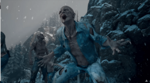

Freakers
.jpg) Freakers are the result of living creatures being infected with the Freaker Virus. The virus grants them superior strength, speed, and agility to that of a normal creature of their species, but become feral, cannibalistic, and aggressive. All Freakers appear to have their skin covered in bloody sores, and the infected humans seem to have gone hairless.
It's also known to infect certain species other than humans, most notably wolves, bears, and crows. Other species seem to be immune to the virus.
Freakers are the result of living creatures being infected with the Freaker Virus. The virus grants them superior strength, speed, and agility to that of a normal creature of their species, but become feral, cannibalistic, and aggressive. All Freakers appear to have their skin covered in bloody sores, and the infected humans seem to have gone hairless.
It's also known to infect certain species other than humans, most notably wolves, bears, and crows. Other species seem to be immune to the virus.
Different types of freakers
Swarmer: Homo sapiens mūtans, the basic variation of the infected adults, make up the majority of the Freakers. They generally travel in groups. Alone they are relatively minor threats, but in swarms, they can easily overwhelm their prey. The most dangerous variation of the swarmer is the Homo sapiens mūtans Turba, or “Horde”, which is a mutation that causes swarmers to stick together and communicate via pheromones, creating a form of hive mind amongst the individuals within each group.

Bleacher: The Homo sapiens mūtans albino is a slightly stronger mutation of average Swarmers. They characteristically lack skin pigment and retain a higher level of durability than the average swarmer.
Newt: Homo sapiens mūtans adolescens, or Infected adolescents, are generally less active and will only attack when Deacon's health is low or if he gets too close to them. There are two identified variations of Newt: mūtans adolescens habitator-tectum (roof dwelling) and mūtans adolescens speluncta-tectum (cave dwelling), otherwise known as the ”loot newt”.
Screamer: Homo sapiens mūtans-Female, are female-only infected capable of stunning Deacon and alerting hordes with their high-pitched scream. They should be killed as quickly as possible, otherwise they will scream and draw in surrounding Swarmers.
Breaker: The Homo sapiens mūtans corporosus is a freaker mutation capable of withstanding a vast amount of trauma and easily penetrating military grade armor.
Reacher: A Reacher is a more highly evolved mutation of Swarmer with greater speed, strength, and intelligence than the average infected, as well as appear to have retained, or regrown their body hair.